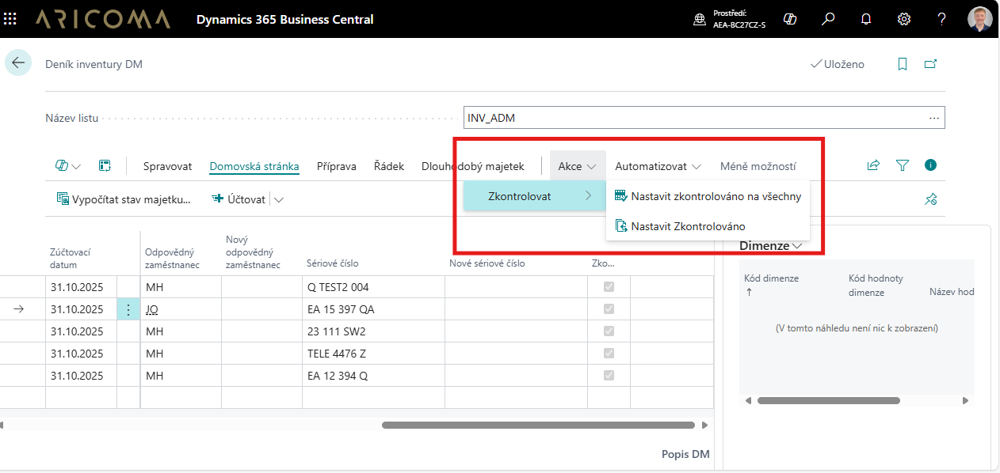
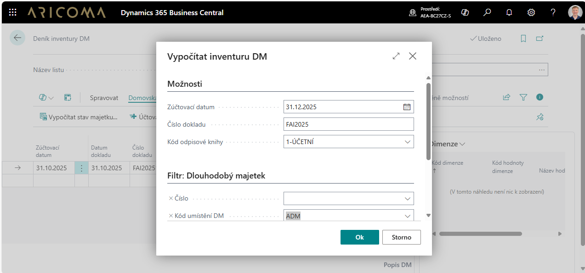

Inventura majetku
Aplikace Inventura majetku slouží pro fyzickou inventarizaci majetku v systému Dynamics 365 Business Central za využití QR kódů.
Už žádné chaotické tabulky, ztracené papíry ani nekonečné dohledávání majetku. Přináší efektivní řešení inventarizace pomocí QR kódů a mobilního zařízení, které propojuje jednoduchost, přesnost a úsporu času. Díky inventuře majetku pomocí QR kódů získáte:
Výhody řešení
- Rychlost a efektivita – Stačí naskenovat kód případně k němu zadat poznámku a máte základ inventury hotov.
- Přesnost dat – Minimální chybovost díky automatickému dohledání majetku.
- Online přehled – Data o majetku dostupná kdykoliv a odkudkoliv.
- Snadná správa změn – Změna umístění, střediska či odpovědné osoby? Na pár kliknutí.
- Ekologické řešení – Bez papírování, vše digitálně.
Jak inventura probíhá
1. Příprava inventury na počítači
- Uživatel vytvoří deník inventury v systému.
- Nadefinuje a vytiskne QR kódy, které se připevní na majetek.
2. Zpracování inventury v terénu (mobil / čtečka)
- Stačí naskenovat QR kód majetku – systém okamžitě identifikuje položku.
- Lze přidávat poznámky, např. návrhy na změnu umístění, sériového čísla či odpovědné osoby.
- Automaticky se ukládá GPS poloha, což pomáhá zpřesnit evidenci.
- Díky mapovému zobrazení se můžete nechat navigovat k poslední známé poloze majetku.
3. Dokončení inventury v kanceláři
- V systému se zpracují požadavky na změny (např. nový kód umístění, střediska, zaměstnance).
- Lze provést i "inventuru od stolu" – např. tam, kde není přístup k majetku.
- Inventura se schválí a zaúčtuje.
- Výstupy je možné vytisknout nebo publikovat do SharePointu pro další využití.

Proč zvolit inventuru majetku pomocí QR kódů
- Úspora času a eliminace chyb.
- Přesná lokalizace majetku díky GPS.
- Plná mobilita – inventarizace odkudkoliv.
- Okamžité záznamy změn bez ručního přepisu.
Inventura majetku – příprava (na počítači)
Příprava a generování deníků inventury pro jednotlivé střediska, umístění, zaměstnance (na jednotlivé listy deníku).
Vyberte ikonu
 , zadejte Deník inventury DM a poté vyberte související odkaz.
, zadejte Deník inventury DM a poté vyberte související odkaz.Na stránce Deník inventury DM vyberte a nebo vytvořte nový Název listu. Pro vytvoření nového listu vyberte akci Nový.
Na stránce Deník inventury DM vyberte Akce/Funkce Vypočítat stav majetku.

Akce Vypočítat inventuru DM obsahuje tyto pole:
- Zúčtovací datum– datum, ke kterému budeme inventuru provádět.
- Číslo dokladu – číslo dokladu, se kterým chceme inventuru zaúčtovat.
- Kód odpisové knihy – vyberte odpisovou knihu, ze které chcete majetek vybrat.
- Filtr – vyfiltrování majetku pro inventuru.
- Číslo – vyberte čísla majetku, který chcete inventarizovat.
- Kód umístění DM – vyberte umístění, ve kterém chcete inventarizovat majetek.
- Odpovědný zaměstnanec – vyberte zaměstnance, kterého majetek chcete inventarizovat.
- Středisko kód (globální dimenze 1) – vyberte středisko, ve kterém chcete inventarizovat majetek.
- Zakázka kód (globální dimenze 2) – vyberte zakázku, pro kterou chcete inventarizovat majetek.
Tisk štítků případně inventurní sestavy pro ruční zpracování (doplňkový způsob zpracování).
- Vyberte ikonu , zadejte Inventura DM štítek a poté vyberte související odkaz.
- Vyberte ikonu , zadejte Deník inventury DM a poté vyberte související odkaz.
- Na stránce Deník inventury DM vyberte Akce/účtování Seznam inventury DM . Tisk formuláře pro ruční zpracování inventury (doplňkový způsob zpracování).
Inventura majetku – zpracování (na mobilním zařízení)
- Na mobilním zařízení vyberte ikonu a nebo přímo odkaz na Deník inventury DM (mobil).
- Přes ikonu v dolním pravém rohu se přepnete do seznamu akcí nad deníkem inventury. Přes akci Vybrat deník vyberte správný inventurní seznam Název listu.
- Pomocí akce Skenovat se přepnete do stránky, ve které pak načítáte jednotlivé QR kódy majetku a případně k nim můžete zadat Poznámku. Poznámky je vhodné nadefinovat do Kódů standardních textů tak, aby uživatel nemusel vypisovat celý text. Pokud majetek není v deníku inventury, systém navrhne a automaticky vytvoří nový řádek. Pokud je v Nastavení fyz. inventury DM zaškrtnuta volba Uložit GPS polohu automaticky při skenování systém při naskenování automaticky uloží i GPS souřadnice.
- Pomocí akce Mapy online je možno si nechat zobrazit polohu majetku na mapě, nebo se nechat navigovat k majetku dle uložených GPS souřadnic.
Inventura majetku – ruční zpracování (doplňkový způsob zpracování)
- Vyberte ikonu , zadejte Deník inventury DM a poté vyberte související odkaz.
- Na stránce Deník inventury DM vyberte správný inventurní seznam Název listu.
- Dle vyplněného inventárního seznamu (papírový dokument) spusťte akci:
- Nastavit zkontrolováno na všechny
- Nastavit zkontrolováno na označené (vybrané) řádky deníku inventury
Inventura majetku – dokončení
Provedení a zaúčtování zaevidovaných změn
- Vyberte ikonu , zadejte Deník inventury DM a poté vyberte související odkaz.
- Na stránce Deník inventury DM vyberte správný inventurní seznam Název listu.
- Podle textové poznámky Popis nebo podle Inventárního seznamu (papírový dokument) k vybranému majetku vyplňte pole:
- Nový kód umístění majetku
- Nový odpovědný zaměstnanec
- Nové středisko (globální dimenze 1)
- Nová zakázka (globální dimenze 2)
- Nové sériové číslo
- Na stránce Deník inventury DM vyberte správný inventurní seznam Název listu.
- Spusťte akci Účtovat a nebo Účtovat a vytisknout. Akce účtování v deníku inventury:
- provede změny na kartě majetku:
- umístění majetku,
- odpovědný zaměstnanec,
- středisko (globální dimenze 1),
- zakázka (globální dimenze 2),
- sériové číslo.
- a vytvoří záznamy o provedených změnách:
- Položky fyz. inventury DM.
- Žurnál inventury DM.
- provede změny na kartě majetku:
Evidence na kartě majetku
- Vyberte ikonu , zadejte Dlouhodobý majetek a poté vyberte související odkaz.
- Na stránce Dlouhodobý majetek jsou nové pole:
- Datum poslední inventury
- GPS latitude
- GPS longitude